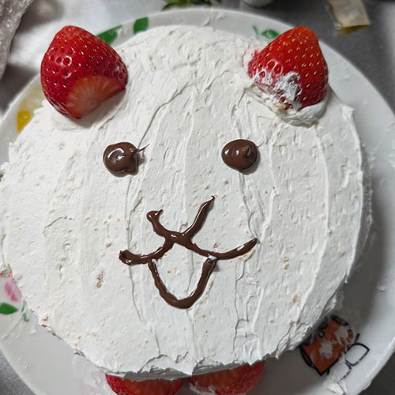

ペットショップサイト
2026.01
「tiny-paws-market」自主制作サイト
使用技術：HTML・CSS・JavaScript
概要：ペット一覧カードや問い合わせフォームを備えた、レスポンシブ対応の架空ペットショップサイトです。
静岡県在住のHTMLコーダー、朝香拓巳です。
オンラインスクールでWeb制作（HTML / CSS
/レスポンシブ対応など）を学び、現在は介護業界からの転職を目指して活動しています。
今後も技術と知識の習得を続け、「読みやすいコード」と「使いやすいサイト」を意識したWeb制作を行っていきます。

現在、以下のスキルを学習中です。
「tiny-paws-market」自主制作サイト
使用技術：HTML・CSS・JavaScript
概要：ペット一覧カードや問い合わせフォームを備えた、レスポンシブ対応の架空ペットショップサイトです。
english-school（英会話スクールLP）
使用技術：HTML・CSS・jQuery
概要：デザインカンプをもとに制作した英会話スクールのLP。スライダーやタブ、アコーディオンを実装した1ページ構成サイトです。